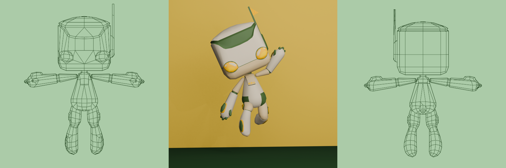
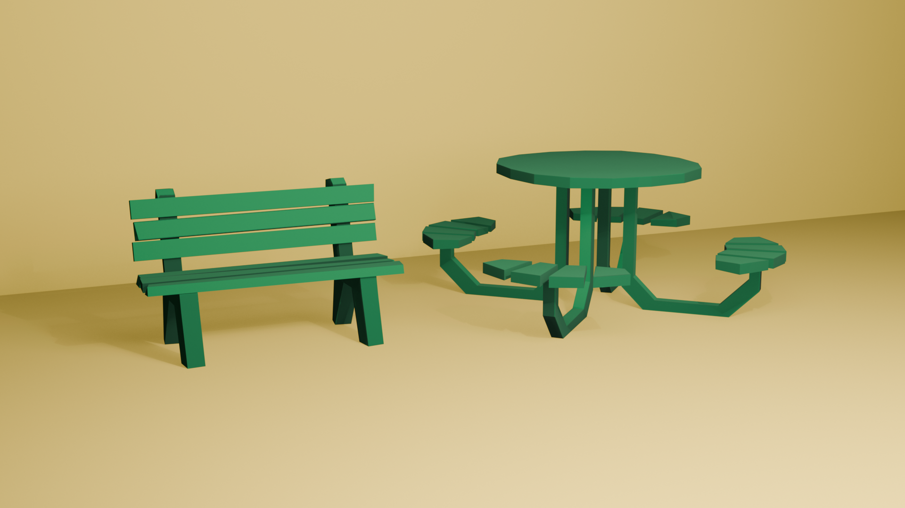

Autumn Ryan | 3D Art
Home ContactHonor Roll!
Textures by Finch Spear.
Stellie
Character based off of the Starship delivery robots.

Sir Gad
Character model of the GMU GADIG (Game Analysis and Design Interest Group) club mascot

Props
Low-poly benches modeled after those on the George Mason University Fairfax campus
